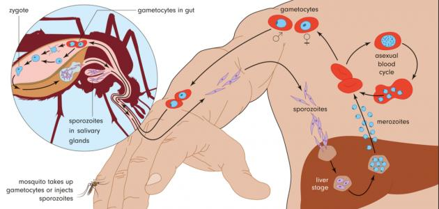

Diseases are one of the most important factors that modify the status of a person in the world. young, old, rich, poor, we all get sick. And the most common diseases in Africa is:
Malaria
Diarrhea
HIV/Aids
Malaria
One of the deadiest diseaes in Africa, year after year, is malaria, a blood-borne diseaes that humans contract from parasites that live primarily inside mosquitoes. An infected mosquito bites you, And the pararsites enter your bloodstream, destroying red blood cells. In 2015, there were an estimated 212 million cases of malaeia worldwide, resulting in an estimated 429,000 deaths. of those, 90 percent, and 92 percent of those deaths, were in Africa. The highest mortality rates were among children.

Diarrhea
This diseases are generally caused by parasites found in contaminated food. In fact, diarrhea diseases are the number one killer of children unber five worldwide. In Africa, 644,000 peaple die because of diarrhea
HIV/Aids
Fainaly, we must talk about HIV. HIV is the virus itself that can cause the immune system to collapse, while AIDS is the symptom or collapse itself. ADIS is estimated to kill up to 6,000 people a day in Africa, makeing it more deadly than any war or natural disaster in the region